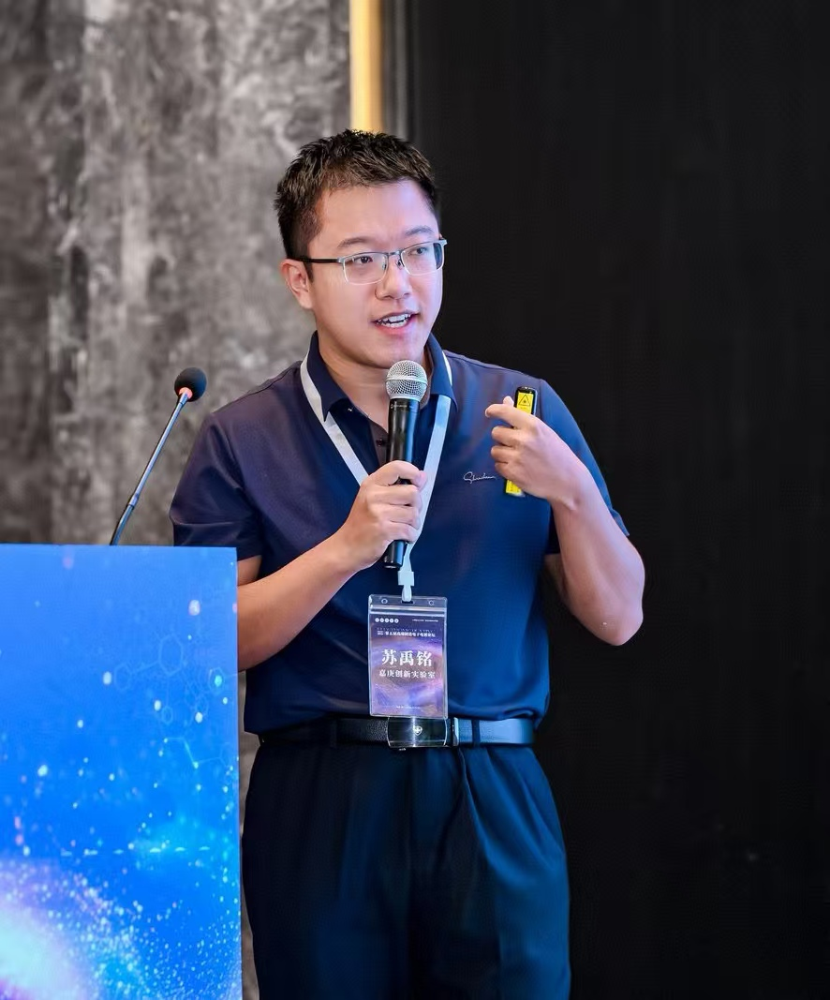

01
Interpretable chemical machine learning
Connecting molecular structure, property prediction and chemical interpretation through molecular surfaces, local functional groups and electronic descriptors.
Assistant Researcher
Xiamen University · AI4EC Lab, IKKEM
Xiamen, China
Understanding chemistry with interpretable models.
Exploring materials through automated experiments.

CHEMISTRY × DATA × EXPERIMENTS
ABOUT / BACKGROUND
My research asks how complex chemical information can become interpretable models and actionable experimental decisions.
I combine theoretical calculations, molecular representations and machine learning to investigate structure–property relationships in chemistry and materials. I develop research software including Surfacia, and extend these methods toward automated electrochemistry, electroplating and AI-agent-assisted experiments. My interests include two-photon absorption, molecular surface descriptors, catalysis and materials optimization.
I aim to connect method development and reusable software with real chemical questions, using data and models to support both prediction and the design of subsequent experiments.
RESEARCH / QUESTIONS & METHODS
Connecting molecular structure, property prediction and chemical interpretation through molecular surfaces, local functional groups and electronic descriptors.
Developing workflows for automated dosing, electrochemical measurements, data analysis and experimental decisions, linking molecular design with interface responses and deposit performance.
Combining quantum chemistry and machine learning for two-photon absorption, framework materials and catalysis, supported by reusable research software and data tools.
SOFTWARE / RESEARCH TOOLS
A workflow connecting molecular structures and surface properties with interpretable descriptors, predictive models and candidate prioritization.
Explore ↗ SurfaciaA local literature research tool connecting page reading, LLM analysis, citation expansion and local research records.
Explore ↗ 秉烛夜读 / handle_candleA graphical decision-tree tool and five teaching datasets introducing feature engineering through organic acid pKa prediction.
Explore ↗ pKa-ML EducationA Gaussian–Multiwfn–MATLAB workflow for excited-state calculations, transition dipole extraction and batch TPA analysis.
Explore ↗ TPA CalculationA helper for extracting Multiwfn molecular descriptors from Gaussian formatted checkpoint files into a CSV feature matrix.
Explore ↗ MultiwfnMLhelperPUBLICATIONS / RESEARCH OUTPUTS
A selection of journal articles, preprints and software resources. Citation counts are a Google Scholar snapshot dated 2026-10-19; listed records are not the total publication count.
Showing 20 of 20 records
Nature Communications · 16 (1), 2073
Angewandte Chemie International Edition · 64 (23), e202502090
arXiv · arXiv:2510.10248
Chemical Science · 15 (31), 12200–12233
Journal of Chemical Theory and Computation · 20 (3), 1193–1213
Advanced Science · 10 (8), 2204902
Journal of the American Chemical Society · 145 (42), 23188–23195
Journal of the American Chemical Society · 145 (35), 19333–19337
Inorganic Chemistry · 62 (30), 11809–11816
Advanced Optical Materials · 11 (19), 2300364
Journal of Materials Chemistry A · 11 (34), 18106–18114
Small · 18 (18), 2200514
Science China Chemistry · 65 (11), 2283–2289
Journal of the American Chemical Society · 143 (15), 5755–5762
Chemistry of Materials · 33 (5), 1618–1624
Chemical Communications · 57 (37), 4516–4519
Inorganic Chemistry · 59 (7), 4181–4185
Software / scholarly resource · Xiamen University; Scholar resource record (2013–2022)
No matching records. Try another search or filter.
CONTACT / Contact
Open to conversations on interpretable machine learning, chemistry, materials and automated experiments.